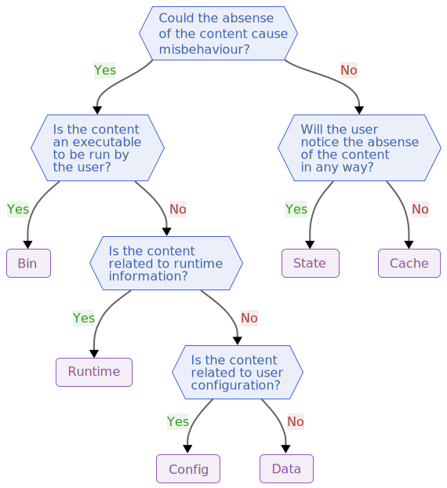

BaseDirs
This package exists to help you put and look for files in the appropriate place(s).
It is essentially an implementation of the XDG (Cross-Desktop Group) directory specifications, with analogues for Windows and MacOS for cross-platform. More specifically, this is a hybrid of:
- The XDG base directory and the XDG user directory specifications on Linux
- The Known Folder API on Windows
- The Standard Directories guidelines on macOS
Why should I care?
It may be easy to treat file paths haphazardly, but for the user in particular abiding by the standards/conventions of the their platform has a number of major benefits, such as:
- Improved ease of backups, since it is easier to make rules for which folders need to be backed up.
- Improved configuration portability, since it is easier to identify and share the relevant configuration files.
- Ease of isolating application state, by containing state to a single directory it is easy to avoid sharing it.
- Decreased reliance on hard-coded paths, improving flexibility and composability.
It is worth noting that these considerations apply to both graphical and command-line desktop applications.
Choosing the appropriate base directory
